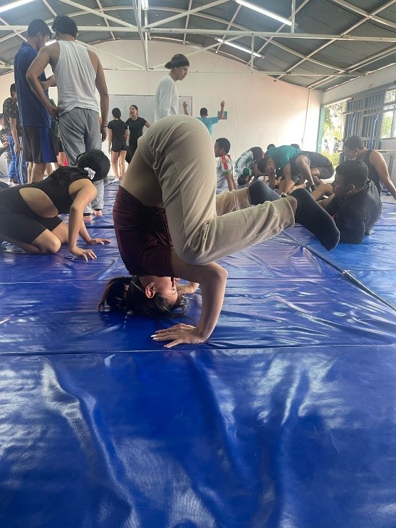
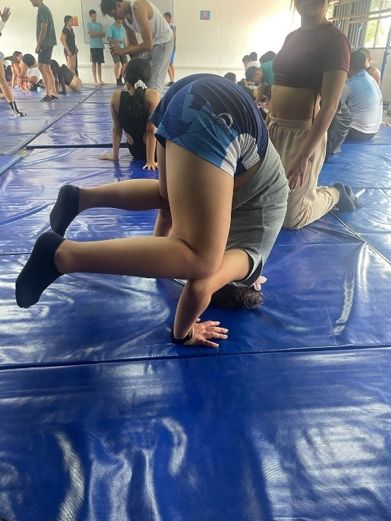
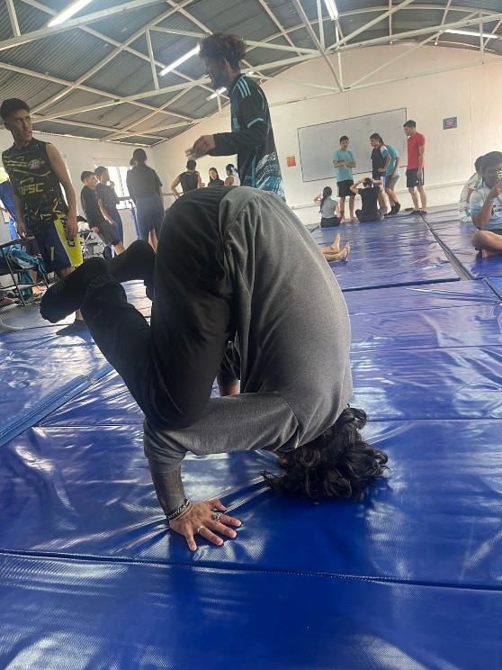
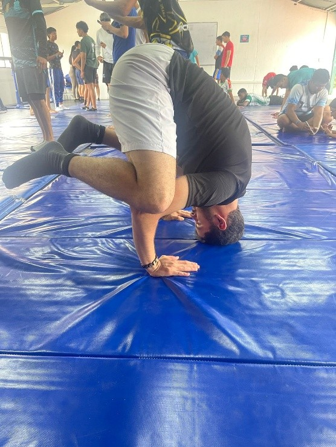

Es el conjunto de acciones relacionadas con la práctica metódica del ejercicio físico,
que tiene como finalidad superar una meta o vencer a un adversario en competencia sujeta
a reglas establecidas.
Gimnasia
La gimnasia es un deporte dotado de arte y movimiento. Requiere una combinación de fuerza, balance,
agilidad, y coordinación del cuerpo en el salón donde se practica. Los gimnastas realizan varios
movimientos continuos que requieren flexibilidad, resistencia, y conocimiento de los saltos en la viga de
balance y en el piso.
Cuentan que, en la época del siglo quinto antes de Cristo, la gimnasia se empezó a implementar como un deporte
aplicado al juego de los atletas porque corrían, saltaban, luchaban y arrojaban el disco y la barra.
Rollito hacia adelante
Un rollo adelante es un movimiento básico de gimnasia que se ve como una voltereta agraciada.
Para hacerlo correctamente, deberás moverte desde la posición inicial, hacer el rollo y
pararte en un solo movimiento. GUIA de APRENDIZAJE 2020. ROLLO DIANA.
Se inicia de pie, con los pies juntos. EL primer movimiento es la flexión de las rodillas y
tobillos hasta tomar la posición de cuclillas. Se equilibra el peso del cuerpo hacía delante hasta
tocar el suelo con las manos. El cuerpo se adelanta produciendo desequilibrio, la cabeza se flexiona
para colocar el mentón sobre el pecho, los brazos se flexionan por codos y muñecas para amortiguar el
peso del cuerpo y la espalda se apoya sucesivamente, volviendo a la posición inicial gracias a la inercia. Unknown. (s. f.).
Rollo atras
Movimiento básico de gimnasia que consiste en dar una voltereta hacia atrás.
Se inicia de pie, con los pies juntos y orientados en dirección contraria al vector
del desplazamiento. EI primer movimiento es la flexión de las rodillas y tobillos hasta
la posición de cuclillas, luego se pasa a la posición de sentado con lentitud y se va rodando
por la espalda a modo de balancín. Las piernas se mantienen flexionadas contra el tronco y
las manos se colocan al lado del cuello con las palmas contra el suelo y los dedos orientados
hacia los hombros, los brazos amortiguan el peso del cuerpo durante el volteo y se regresa a la
posición inicial.
Mosquito
Es un apoyo simple, de fácil ejecución porque permite repartir el peso del cuerpo en tres puntos:
cabeza y ambas manos; éstos deben formar un triángulo. Colócate en seis apoyos pies, rodillas y manos.
Apoya tu cabeza y pon tus brazos al lado de las rodillas, con las manos apoyadas en el piso, en línea
con tus hombros. Flexiona tus brazos y gira los codos hacia afuera. Apoya tus rodillas en tus antebrazos,
sostén la posición en equilibrio.




Invertida con apoyo
La gimnasia invertida con apoyo es un ejercicio que consiste en alinear el cuerpo en una línea recta,
apoyando las manos en el suelo.
Este es un ejercicio de la gimnasia, el cual consta de una posición inicial que es:
formar con la cabeza apoyada en el piso y las manos también,
el cual se encargara de sostener el cuerpo en esta posición, después de esto procedemos a
colocar nuestras rodillas sobre los codos, esto con el fin de mantener nuestra fuente de apoyo,
para el siguiente paso. E l siguiente paso consta de elevar las piernas, de tal forma que todo
tu cuerpo quede solo en el apoyo de la cabeza y las manos.
Rollito hacia adelante
1. Mindeporte. (n.d.). Ministerio del Deporte.
2. Gimnasia | Secretaría de Cultura, Recreación y Deporte